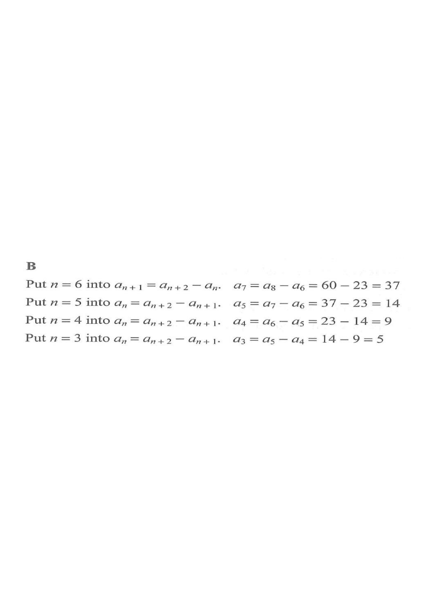

Interact / scroll the steps on the right to highlight each move.
Question
Let \(a_n\) be the \(n\)th term of a sequence. If
\(a_6 = 23\), \(a_8 = 60\) and
\(a_{n+2} = a_n + a_{n+1}\) for any positive integer \(n\),
then \(a_3 =\)
A. \(4\)
B. \(5\)
C. \(9\)
D. \(14\)

Figure (original exam diagram)
1Step 1 — Read the recurrence relation
Recurrence Relation\(a_{n+2}=a_{n}+a_{n+1}\ \Longleftrightarrow\ a_{n}=a_{n+2}-a_{n+1}\)Rearranging lets us step backwards from the known terms to the earlier ones.
The given relation is
\[
a_{n+2} = a_n + a_{n+1}
\qquad \text{for every positive integer } n.
\]
Rearranging it so that each term is expressed in terms of the two terms on its right:
\[
a_n = a_{n+2} - a_{n+1}.
\]
This lets us step backwards from \(a_8\) and \(a_6\) to \(a_3\).
Hint: Think of the recurrence as “next term = previous two added”, so “previous = next minus the one after”.